So spielst du Zaubertisch
Zaubertisch ist ein Stich- und Ansage-Kartenspiel. Das Besondere: Du gewinnst nicht, indem du möglichst viele Stiche holst – sondern indem du vorher genau vorhersagst, wie viele es werden. Diese Anleitung führt dich Schritt für Schritt durch das Spiel.
Ziel des Spiels
Vor jeder Runde sagst du an, wie viele Stiche du machen wirst. Triffst du deine Ansage exakt, gibt es die volle Punktzahl. Für jeden Stich zu viel oder zu wenig gibt es Minuspunkte. Wer nach allen Runden die meisten Punkte hat, gewinnt.
Gespielt wird mit einem Deck aus 60 Karten: die Zahlen 1 bis 13 in vier Farben (Rot, Gelb, Grün, Blau) sowie vier Zauberer und vier Narren.
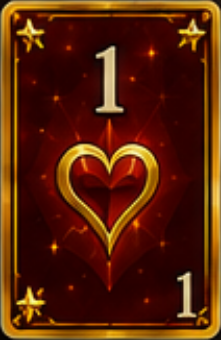
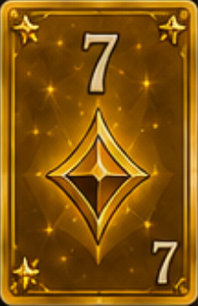
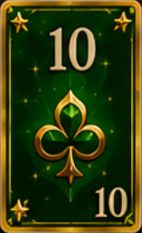
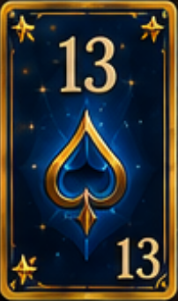
Die Sonderkarten
Zwei Kartenarten stehen außerhalb der Farben und entscheiden viele Stiche:
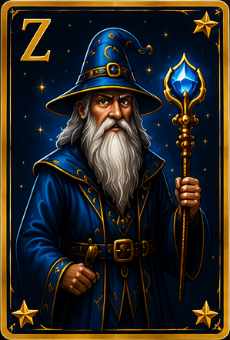
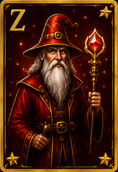
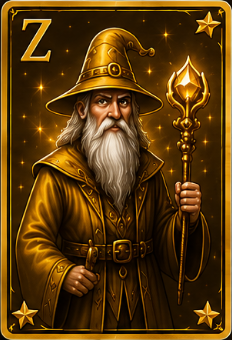
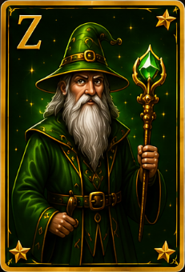
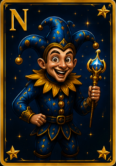
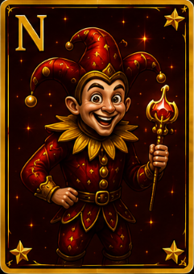
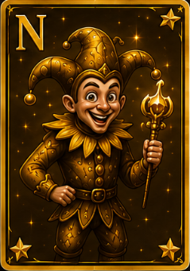
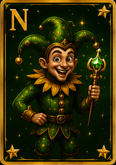
Rundenablauf & Trumpf
Die Kartenzahl wächst mit jeder Runde: Runde 1 = eine Karte, Runde 2 = zwei Karten und so weiter. Ab der Spielhälfte sinkt die Zahl wieder, bis am Ende nur noch eine einzige Karte gespielt wird.
- Zu Beginn jeder Runde werden die Karten ausgeteilt.
- Eine weitere Karte wird aufgedeckt – ihre Farbe ist der Trumpf für diese Runde. Trumpfkarten schlagen alle anderen Farben.
- Wird ein Zauberer als Trumpf aufgedeckt, bestimmt der Spieler den Trumpf; wird ein Narr aufgedeckt (oder in der letzten Runde nichts mehr), gibt es keinen Trumpf.
Die Ansage
Bevor die erste Karte gespielt wird, sagt reihum jeder an, wie viele Stiche er in dieser Runde holen wird. Diese Zahl ist bindend – dein Ziel ist es, sie punktgenau zu erreichen.
Einen Stich spielen
Reihum legt jeder eine Karte. Es gilt Farbzwang: Die zuerst gespielte Farbe muss – wenn möglich – bedient werden.
- Wer die angespielte Farbe nicht hat, darf eine beliebige Karte legen (auch Trumpf, Zauberer oder Narr).
- Ein Zauberer oder Narr darf jederzeit gespielt werden – auf sie besteht kein Farbzwang.
Wer den Stich gewinnt, spielt die nächste Karte an. Die Reihenfolge, wer gewinnt:
- 1. Der erste gespielte Zauberer gewinnt immer.
- 2. Sonst gewinnt die höchste Trumpfkarte.
- 3. Sonst die höchste Karte der angespielten Farbe.
- 4. Wurden nur Narren gespielt, gewinnt der erste Narr.
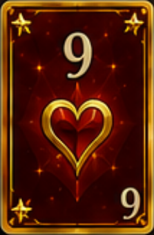
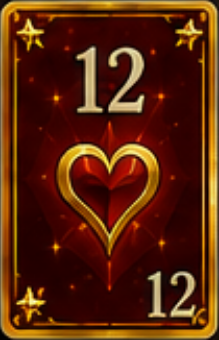
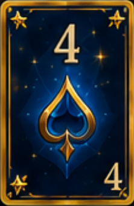
Punkte zählen
Am Ende jeder Runde wird abgerechnet:
- Ansage exakt getroffen: 20 Punkte + 10 Punkte je geholtem Stich.
- Daneben: −10 Punkte für jeden Stich Differenz (zu viel oder zu wenig).
Beispiel
Nach der letzten Runde werden alle Rundenpunkte addiert – die höchste Gesamtpunktzahl gewinnt.
Tipps für Einsteiger
- Zauberer und hohe Trümpfe sind sichere Stiche – plane deine Ansage darum herum.
- Willst du keinen Stich, spare dir Narren und niedrige Farben zum Abwerfen auf.
- Merke dir, welche Trümpfe schon gespielt wurden – so schätzt du besser, ob dein Blatt noch hält.
- „Null" anzusagen ist oft wertvoll: 20 sichere Punkte, wenn du jeden Stich vermeiden kannst.
Jetzt selbst ausprobieren
Am schnellsten lernst du die Regeln beim Spielen – gegen die KI verlierst du nichts.